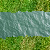
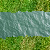
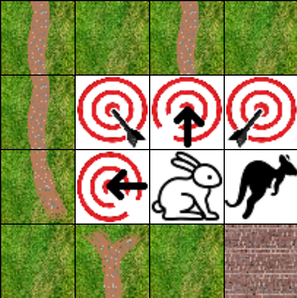
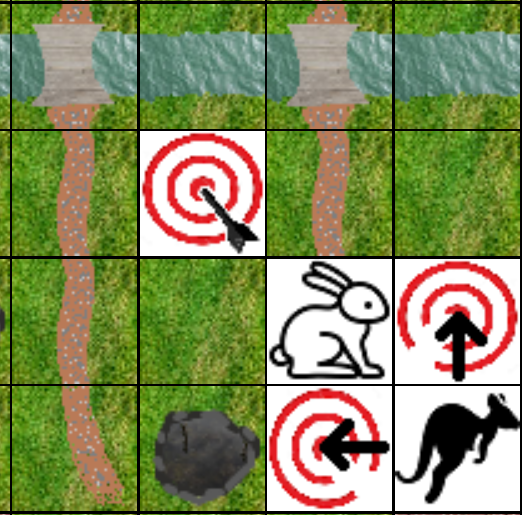

Help Page
This is a team based competition designed to encourage you to do more physical exercise
through doing pushups while at home as well as team building by doing all this as a part of
a team.
Your Goal:
Your goal is to help your team reach the Finish tile first.
You will achieve this goal by entering your pushups into this website. When your team has accumilated
enough points you or a team mate will move your team closer to the finish, until eventually you reach
the finish line.
How to record pushups?
First you will need to do some pushups. These can be normal pushups from the feet.
They can be from the knees if you are un-able to do pushups from the feet, or you are exahusted
from doing normal pushups and do some knee pushups to finish up.
If you are injured or un-able to do full or knee pushups you can instead do pushups from the wall.
After doing these pushups you will want to login to this website.
You can click on the link titled: Enter Pushups.
Once in there, enter in the amount of pushups you did.
After clicking Submit, you will be asked to confirm you put in the correct amounts, if they are leave
yes selected and then click Submit again. If not, please select no and re-enter in the correct amount.
Your pushups will be converted into points and recorded for your team.
How to move your team?
Depending on the tile your team is on, there will be a target amount of points needed in order to move.
For example, on the start tile, you will need 200 points to initially move. The pushups you enter in are converted into
points for this movement
To move sideways, you will require half as many points. Only use this if employing a stratagy of sorts that will help
your team. Moving sideways for no reason may put your team at a disadvantage!
Some tiles you will not be able to move into such as these tiles: 

As you get closer to the finish, each next row of tiles will require more pushups than the last row.
However different types of tiles, such as the swamp or the road will decrease or increase the amount of pushups on the row.
If you hover the mouse over a tile for long enough, you will see how many pushups will be needed to move off that tile.

When it comes time to move you will see red arrows pointing to where your team can move.
When your team is ready to move click the arrow. You will be presented with a page confirming you want to move. Once you
confirm, your team will be moved to that square.

If there is a team infront of you, you can jump over them bringing you closer to the finish line
even faster. Be ware though, other teams can also jump over your team, so keep this in mind when planning your moves.
The only time you can not jump over a team, is if it would cause you to go outside the map or onto a blocked tile.
If your team reaches the finish first, your team has won!